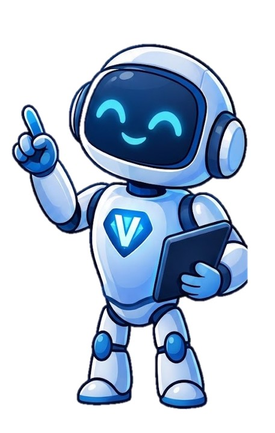

KIRA
Asistente de GeografíaComplementa el aprendizaje de la ciencia geográfica para los alumnos de 1ero a 5to Año de secundaria.

VORTEX
Asistente de EconomíaAsistente para acompañarte y guiarte con las tareas de economía en la secundaria.

SAMY
Tutor de Apoyo GeneralTu compañero para todas las materias, paso a paso y bien fácil.
Asistente
Materia